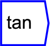

Next: asin
Up: Functions/Unary Operators
Previous: cos
Contents

Produces a tangent function of the input.
The operator can be placed on the canvas in two ways:
- From the Functions (``function'') toolbar; or
- By typing the letters ``tan'' on the canvas and then pressing the
Enter key.
For example, connecting a ``time'' block to this function, and then
to a graph, will produce a tangent graph. For further explanation
regarding trigonemtric functions, see Wikipedia's page on trigonometric functions.